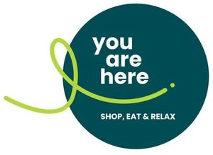

Trade Mark Journal No.2025/010 7 March 2025
WO0000001822613 (16,29,30,31,32,33,35,43)
Office of origin: European Union Intellectual Property Office (EUIPO)
Date of International Registration:3 July 2024
Date of designation in the UK:
3 July 2024

The mark contains the colours dark green, green and white.
International priority date claimed: 19 January 2024
(European Union Intellectual Property Office (EUIPO))
(018975952)
- Class 16
- Printed matter; paper party decorations; art materials in the nature of paint boxes and brushes; drawing materials and materials for artists; stationery and educational supplies; bags and articles for packaging, wrapping and storage, of paper, cardboard or plastics; periodicals; newspapers; books; book covers; bookends; protective covers for books; paint boxes and brushes.
- Class 29
- Meat; dairy products and dairy substitutes; edible oils and fats; fish, seafood and molluscs, not live; soups and stocks, meat extracts; processed fruits, fungi and vegetables (including nuts and pulses); prepared salads; pre-cut vegetables for salads; antipasto salads; potato-based salads; legume salads; food prepared from game; milk beverages, milk predominating; milk shakes; milk products; egg-based preparations; fruit salads; fruit salads; fruit-based snack food; dried fruit; crystallized fruits; frosted fruits; yoghurt; nuts, prepared.
- Class 30
- Pastry and confectionery; bread; rolls; pastries; ciabatta; filled bakery goods; filled wraps (pasta); sandwiches; pancakes; quiches; rice-based prepared meals; cereal-based snack food; snack foods consisting principally of confectionery; snack foods consisting principally of bread; fruit coulis [sauces]; yogurt (frozen); coffee; tea; cocoa; sandwiches containing salad; pastries, cakes, tarts and biscuits (cookies); cereal bars and energy bars; sweets (candy), candy bars and chewing gum; salts, seasonings, flavourings and condiments.
- Class 31
- Fresh fruit, nuts, vegetables and herbs; agricultural and aquacultural crops, horticulture and forestry products; flowers; plants and their fresh produce; fungi; foodstuffs and fodder for animals; bedding and litter for animals.
- Class 32
- Non-alcoholic beverages; beer; cocktails, non-alcoholic; juices; vegetable juices [beverages]; energy drinks; isotonic beverages; whey beverages.
- Class 33
- Alcoholic beverages (except beer); preparations for making alcoholic beverages.
- Class 35
- Retail services in relation to the following goods: food, non-alcoholic drinks, alcoholic beverages, tobacco products, toiletries, cleaning articles, mobile telephones, clothing, toys, fashion accessories, sweets, jewellery, audio-visual apparatus, bags, baggage, printed matter, works of art, jewellery articles, perfumery and cosmetics; providing consumer product information relating to food or drink products; rental of vending machines; rental of exhibition spaces and exhibition areas for advertising purposes.
- Class 43
- Services for providing food and drink; providing drink services; providing food and drink in bars, beer gardens, cafés, cocktail bars, pubs, pizzerias, restaurants, fast-food restaurants and self-service cafeterias; café services; food and drink catering; canteens; food cooking services; rental of exhibition spaces, conference facilities, social event facilities and meeting rooms; take-out restaurant services; food preparation services.
smartseller GmbH & Co. KG
Representative: Zirngibl Rechtsanwälte Partnerschaft mbB, Karlstraße 23, 80333 München, GERMANY